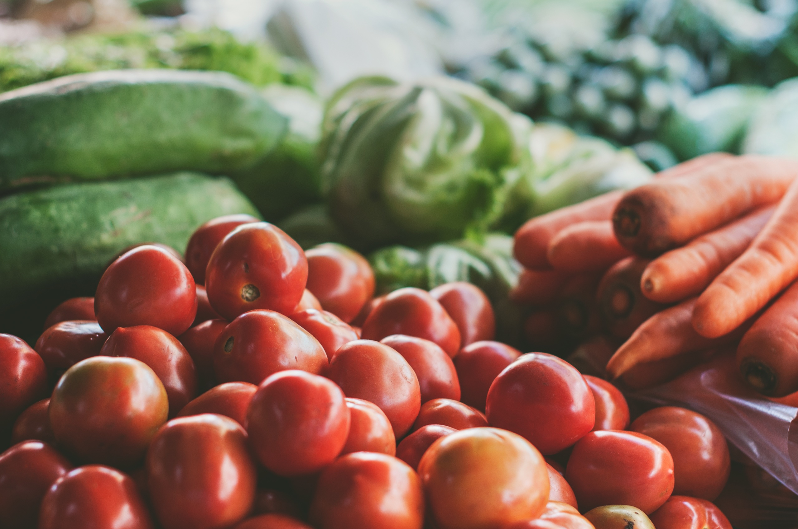

We Do Urban Farming Right
Current Veggies, Fruits, Microgreens for sale:
If you're interested in seeing more Dirt, please check out our Farm Activities, Facebook, Instagram, or even... our MySpace page.
If you'd like to just get in contact, please send us a line !